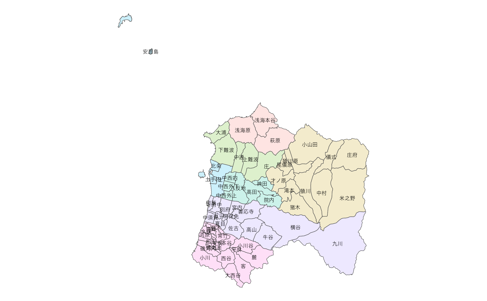
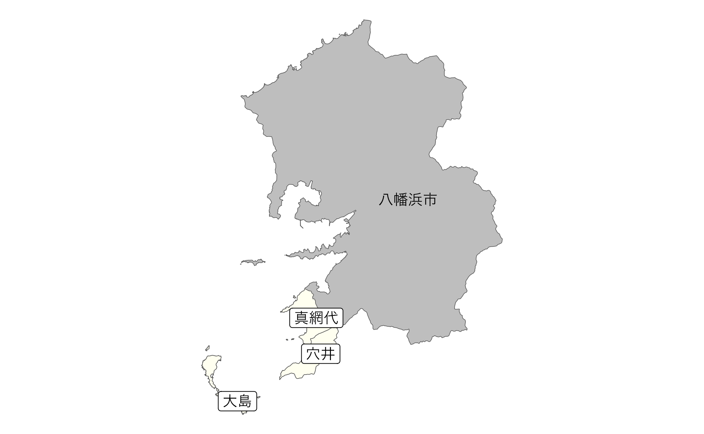

Drawing Agricultural Community Boundaries
This package may be beneficial, especially for R beginners, when simply wanting to draw agricultural community boundaries.
library(dplyr)
library(ggplot2)
library(gghighlight)
library(ggrepel)
b <- get_boundary("38", path = "~", quiet = TRUE)
eb <- extract_boundary(b, city = "松山市", kcity = "浅海|立岩|難波|正岡|北条|河野|粟井")
ggplot(data = eb, aes(fill = KCITY_NAME)) +
geom_sf(alpha = .2) +
geom_sf_text(aes(label = RCOM_NAME), size = 2, family = "Hiragino Sans") +
theme_void() +
theme(legend.position = "none")
出典：農林水産省「農業集落境界データ（2020年度）」を加工して作成。
eb <- extract_boundary(b, city = "今治|内子", all = TRUE)
ggplot(data = eb$kcity) +
geom_sf(aes(fill = fill))出典：農林水産省「農業集落境界データ（2020年度）」を加工して作成。
eb <- extract_boundary(b, city = "西予市", kcity = "遊子川", all = TRUE)
ggplot() +
geom_sf(data = eb$pref, fill = NA) +
geom_sf(data = eb$city, fill = "gray") +
gghighlight(fill == 1,
unhighlighted_params = list(
alpha = .05
)) +
geom_sf(data = eb$kcity |> filter(fill == 1), fill = "black") +
geom_sf_text(data = eb$city |> filter(fill == 1),
aes(label = city_kanji),
size = 3,
nudge_x = -.025, nudge_y = -.025,
family = "HiraKakuProN-W3") +
geom_point(data = eb$community_union, aes(x = x, y = y), colour = "black") +
geom_text_repel(data = eb$community_union,
aes(x = x, y = y),
label = "遊子川地区",
nudge_x = .3, nudge_y = -.025,
segment.color = "black",
size = 3,
family = "HiraKakuProN-W3") +
theme_void()出典：農林水産省「農業集落境界データ（2020年度）」を加工して作成。
eb <- extract_boundary(b, city = "八幡浜市", kcity = "真穴", all = TRUE)
ggplot(data = eb$community) +
geom_sf(data = eb$city |> filter(fill == 1), fill = "gray") +
geom_sf_text(data = eb$city |> filter(fill == 1), aes(label = city_kanji), family = "HiraKakuProN-W3") +
geom_sf(fill = "ivory") +
# geom_sf(data = eb$fude, aes(fill = land_type), colour = NA) +
geom_sf_label(aes(label = RCOM_NAME), family = "HiraKakuProN-W3") +
theme_void() +
theme(legend.position = "none")
出典：農林水産省「農業集落境界データ（2020年度）」を加工して作成。